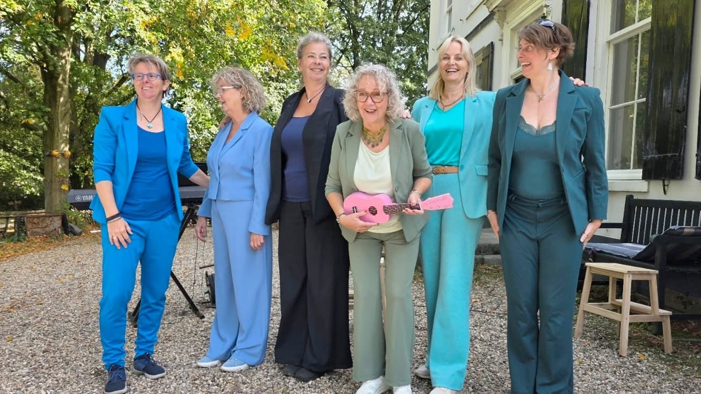

Boek ons
voor een speciaal optreden

Ons repertoire is veelzijdig: van spirituals en mooie of pittige popsongs tot liedjes uit de kleinkunst. Soms ontroerend, soms vrolijk, met humor en een flinke dosis eigenheid.
Benieuwd wat wij voor uw gelegenheid kunnen betekenen?
Mail ons vrijblijvend. Er is veel mogelijk en wij denken graag met u mee!